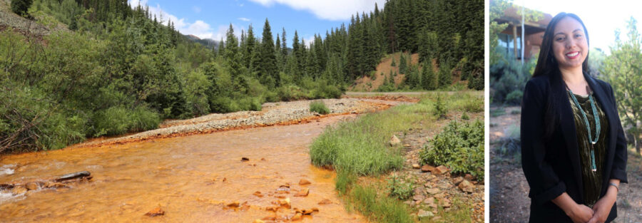

Teresa Montoya’s Tó Łitso (Yellow Water): Ten Years after the Gold King Mine Spill: Opening Keynote
Celebrate the opening of Teresa Montoya’s Tó Łitso (Yellow Water): Ten Years after the Gold King Mine Spill. The exhibition explores the impact of the 2015 Gold King Mine spill on Diné (Navajo) communities in the Animas and San Juan watersheds. Combining documentary photographs with scientific data and poetic reflection, Tó Łitso invites viewers to consider water as a life-sustaining resource and as a conduit for histories, stories, and harm.
During this public program, exhibition curator Kathleen Bickford Berzock and Associate Professor of Global Health Studies Beatriz Oralia Reyes will share a welcome, followed by a presentation by Teresa Montoya, artist and University of Chicago Assistant Professor of Anthropology. Montoya will give a keynote explicating her photographic practice and the ethical dilemmas involved in documenting environmental disasters, especially within the long history of image-making on Indigenous homelands. Her presentation will be followed by a conversation between Montoya and Carl Fuldner, Assistant Professor of Art History at the University of Chicago, examining her methodology and how her work relates to other photography projects addressing industrial contamination and its impact on communities. The program will be followed by a light reception.
Participation level – light, audience members can choose to participate in the Q&A at the close of the program.
Programs are open to all, on a first-come first-served basis. RSVPs are not required, but are appreciated.
ABOUT THE SPEAKERS
Kathleen Bickford Berzock is Associate Director of Curatorial Affairs at Northwestern University’s Block Museum of Art, Professor of Practice in Northwestern’s Department of Anthropology, and affiliated faculty in the Department of Art History and the Program of African Studies.
Beatriz Oralia Reyes (Diné) is Associate Professor of Global Health Studies at Northwestern University. She earned her Bachelor of Science in Zoology from the University of Oklahoma and her Master of Public Health in Health Behavior from East Carolina University. Reyes is a trained public health practitioner. Her research interests work at the intersection of chronic disease prevention, program evaluation, and qualitative research. She aims to explore the best practices for developing culturally appropriate and sustainable interventions by working with communities through the research process.
Teresa Montoya (Diné) is a photographer, social scientist, and Assistant Professor in the Department of Anthropology at the University of Chicago. Her research and creative practice focus on contemporary problems of environmental governance in relation to historical legacies of land dispossession and resource extraction across the Indigenous Southwest. Her work has been published in the American Journal of Public Health, Anthropology Now, Cultural Anthropology, Journal for the Anthropology of North America, Ecology and Society, Environment and Planning E: Nature and Space, Visual Anthropology Review, and Water International. She has curatorial experience in various institutions, including the Field Museum where she served as a guest curator for Native Truths: Our Voices, Our Stories. She is the founding member of Diné in Focus, a collective dedicated to Diné photojournalism through a Diné lens. Website: https://teresamontoya.squarespace.com/